powershell -ExecutionPolicy Bypass -File scripts\set-wallpaper.ps1 -Variant v7-prism-luck
mula sa repo root. Ulitin pagkatapos ng bawat defreezer reboot — nasa session re-arm checklist yan.
gauntlet-loop sa isang bagong axis, PRESENCE — hindi attention,
hindi trust: mukha pa rin bang mahal sa ika-500 tingin, may icon at window sa ibabaw, at hindi
nagiging ingay. Bawat larawan ay isa-isang ginradohan (walang pairwise, kaya walang position
bias), tatlong takbo, at ang v4a ang anchor. Nasukat ang drift ng instrumento sa
±3 puntos, kaya sa ibaba ng apat ay ingay lang.
| Variant | Maingay na cut | Tahimik na cut |
|---|---|---|
| v4a plate (luma, 2026-07-25) | 45 / 48 | — |
| v4b aperture (luma) | 42 | — |
| v5a slate | 63 | 68 / 65 |
| v5b prism | 55 | 58 |
| v5c monolith | 52 | 55 |
| v5d lens | 45 | 58 |
| v6 prism mk2 | — | 72 |
v5b, ika-2 ang v6. Ika-4 (55) at ika-1 (72)
yun sa rubric. Sya ang huling mata, kaya pinagsama: ang linya ng v5b sa ilaw at kapal ng
v6, at naayos ang bug ng v5b (tumatakas ang refracted band sa labas ng pane at nagpipinta ng
lumulutang na parihaba sa itaas). Sinadyang hindi ginradohan ang v7: pinaparusahan ng
PRESENCE axis ang malaking headline, kaya ang score nya ay hindi nya sagot, at nasagot na ni Neil.
Ang natutunan: hindi ang dami ng salita ang gumagawa ng ingay, kundi
ang paglalagay ng teksto sa tabi ng pinakamaliwanag na bagay. Sa v7 nasa madilim na kalahati
ang teksto at nasa kabila ang ilaw, kaya kalmado sa mata kahit 104px ang letra. At isa pa: utos sa
sarili ang mga tinanggal na headline (one real thing shipped today) at hindi mo na sinusunod
yun pagkalipas ng isang linggo. Ang none of this was luck ay hindi utos, kundi pahayag ng
nangyari na. Hindi nauubos ang totoo.
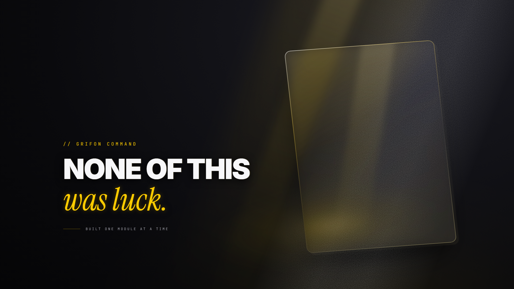
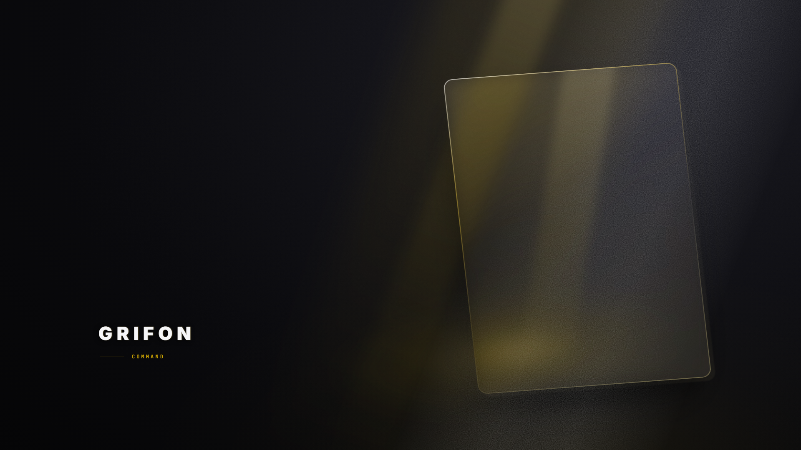
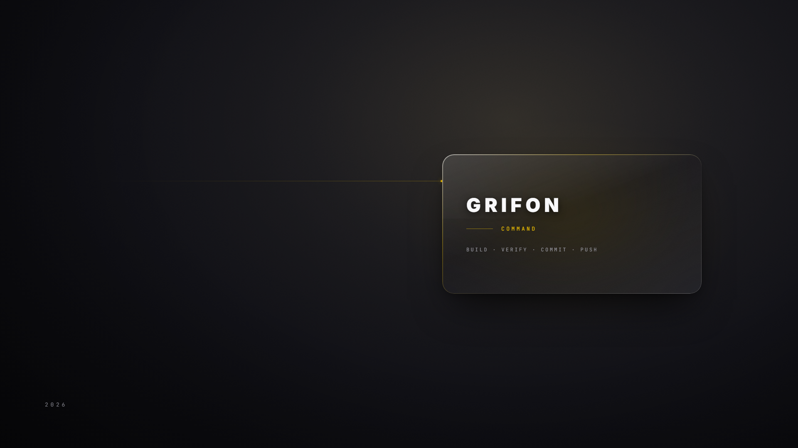
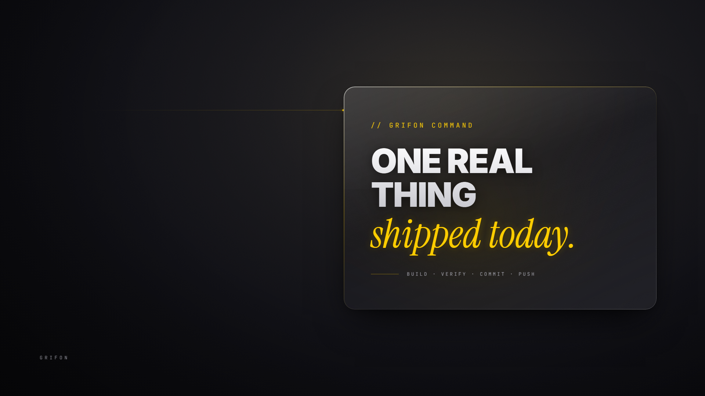
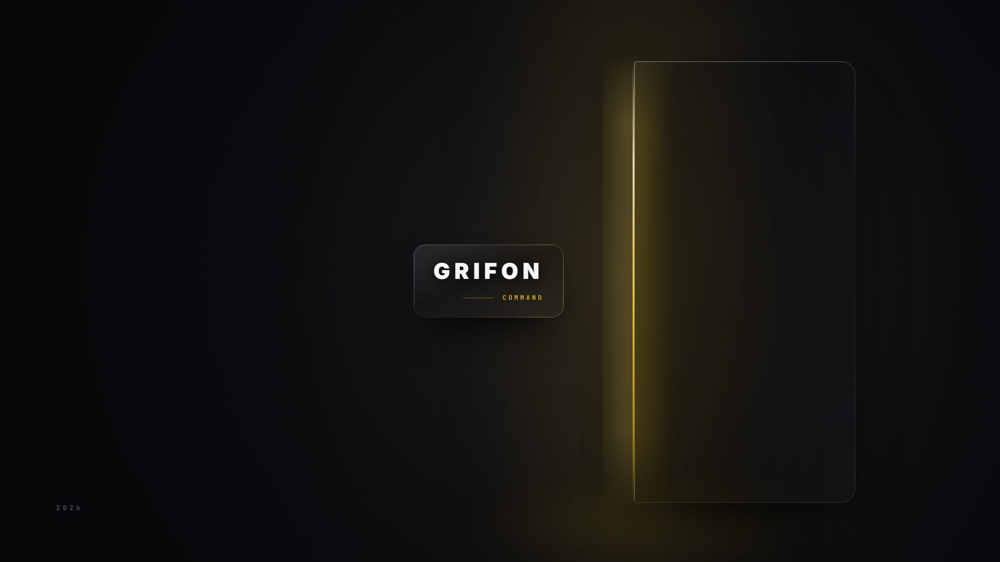
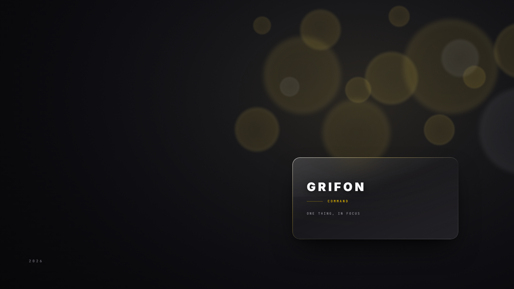
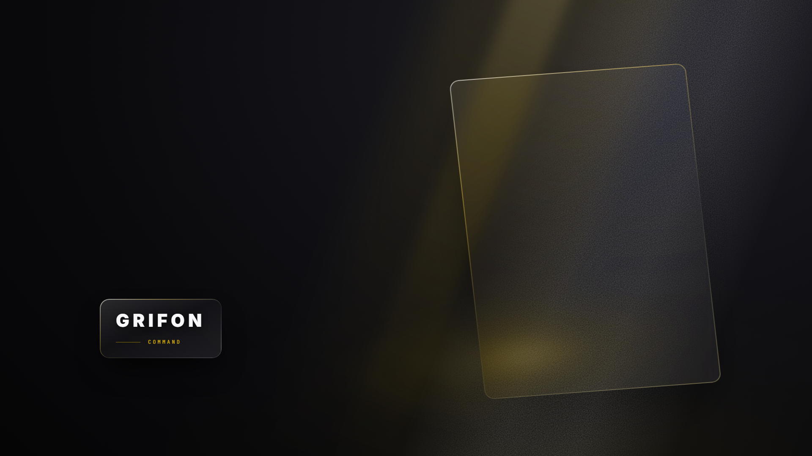
public/logo.png +
components/ui/GrifonMark.tsx). At ang mga sinag, singsing at lumulutang na disc doon
ay hindi sumusunod sa kahit anong ilaw. Palamuti lang para mukhang mahal, kaya puno ang gitna pero
walang laman.
presence_phone axis (data lang, hindi hatol): m2 62, m3 55, m1 48.
Dalawang beses nang natalo ang rubric ni Neil — ika-4 ang v5b sa
desktop, ika-3 ang m1 dito. Ang natutunan tungkol sa instrumento: magaling syang maghanap ng
sira, hindi sya marunong pumili ng panalo. Sya ang nakakita ng slogan confound at ng dead-center
na problema, dalawang bagay na hindi namin nakita. Pero walang alam ang isang numero tungkol sa
kung ano ang gustong titigan ng may-ari araw-araw.
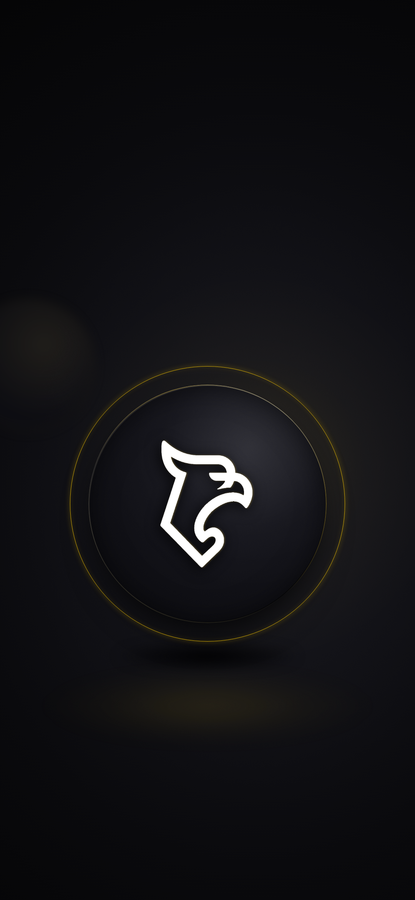
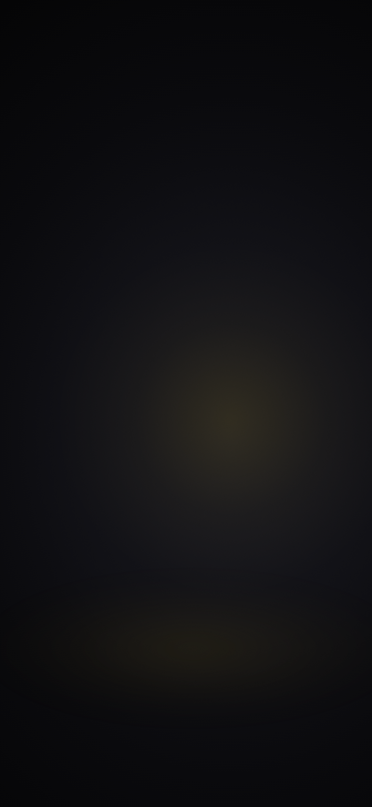
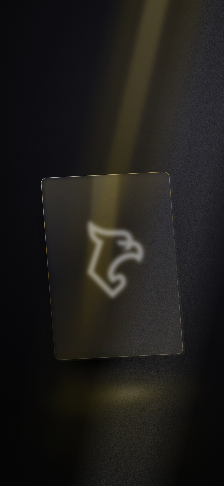
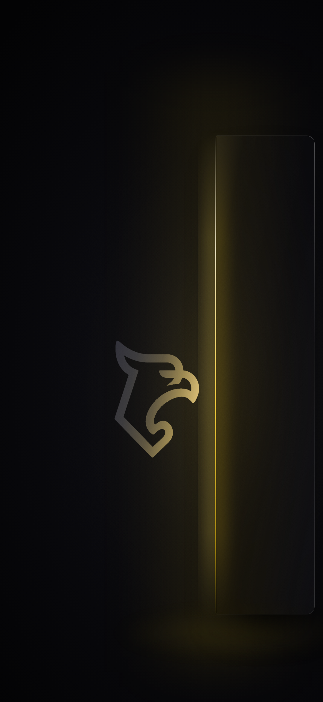
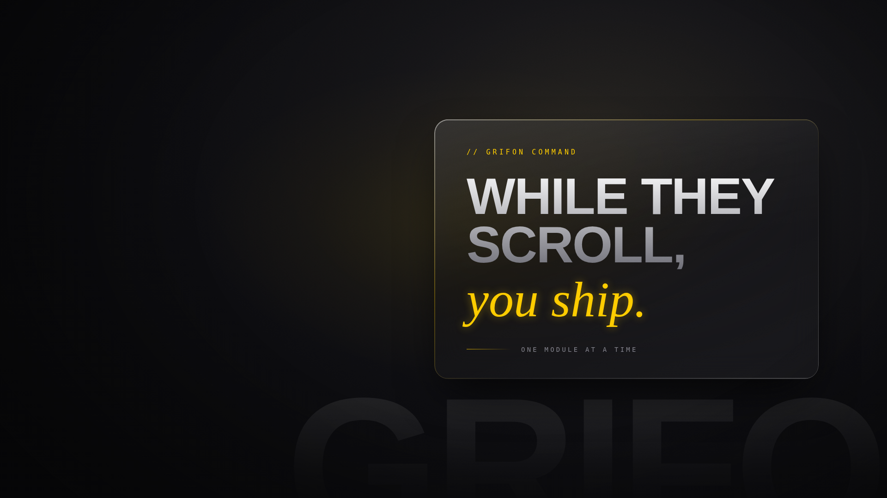
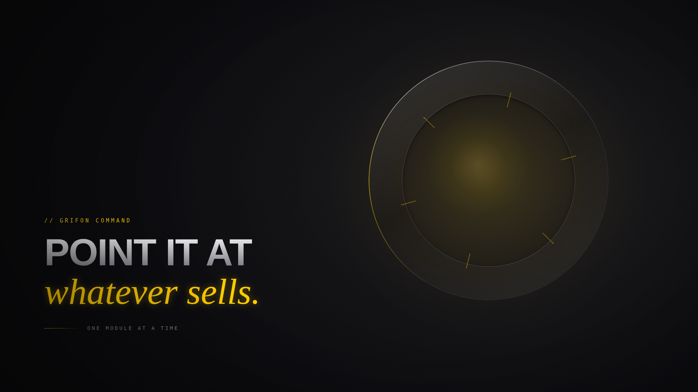